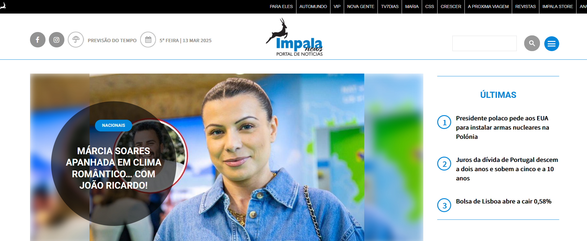
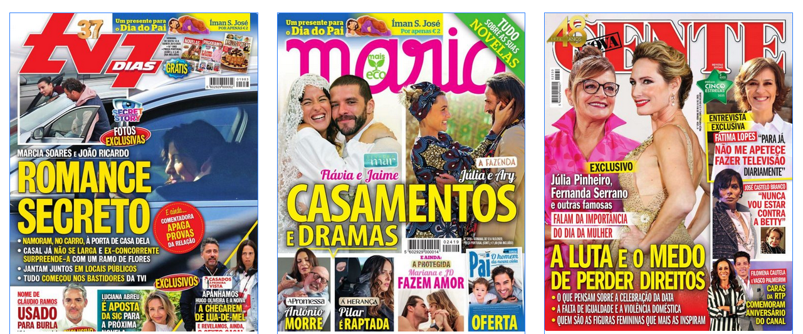
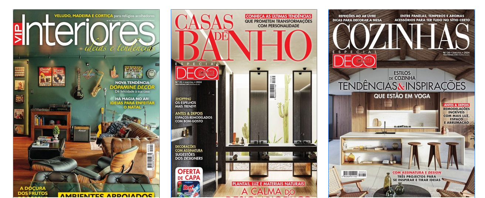
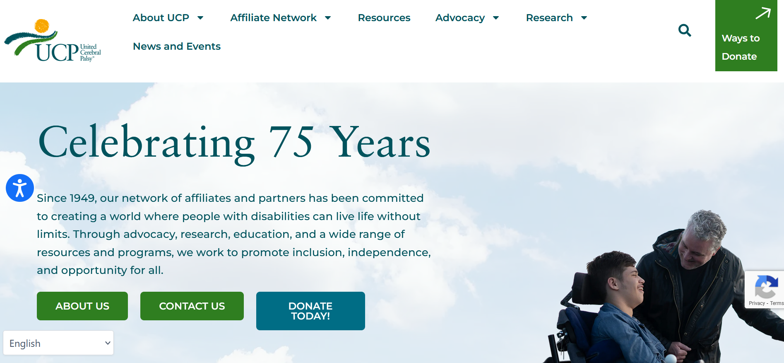

This is a ready-to-print page
Overseas experience
Early international design work across publishing and charity
Before moving to the UK, I gained hands-on experience working across multiple industries and countries, contributing to publishing, charity, digital platforms, branding, and visual storytelling.
This period shaped my foundation as a designer, allowing me to explore a wide range of disciplines including UX design, product design, illustration, e-commerce, and editorial design. It also helped me develop a strong sensitivity to audience, context, and communication across very different environments.
The challenge
Working across different sectors meant constantly adapting to new audiences, goals, and constraints. In publishing, the challenge was to translate complex information and narratives into engaging, accessible visual content. In the charity sector, the focus shifted towards emotional connection, clarity of message, and supporting meaningful causes through design.
Each project required balancing creativity with purpose, ensuring that the work was not only visually appealing but also effective in communicating ideas, driving engagement, or supporting fundraising and awareness efforts.
Impala Publishing
At Impala Publishing, a leading Portuguese media group, I worked closely with journalists and designers to create infographics and illustrations for a wide range of magazines. My work contributed to titles such as Para Eles, Automundo, VIP, Nova Gente, TV 7 Dias, Maria, and Crescer.
Using Adobe Illustrator, I transformed complex data, stories, and editorial content into clear and engaging visual formats. The work required speed, precision, and a strong understanding of how visual language can enhance storytelling and reader experience.



Source: Impala Publishing
United Cerebral Palsy (UCP) – Middle Tennessee
I also worked with United Cerebral Palsy of Middle Tennessee, a charity focused on supporting individuals with disabilities and promoting independence and inclusion.
My role involved designing branding and marketing materials for fundraising initiatives, including country music shows and live telethons. These events relied on strong visual communication to connect with audiences and encourage participation and support.
The work required a different kind of sensitivity, focusing on clarity, empathy, and impact. It reinforced the importance of design as a tool not just for communication, but for connection and positive change.

Source: United Cerebral Palsy of Middle Tennessee
My role
Across these experiences, I worked in a variety of roles including product designer, UX designer, web designer, and visual designer. I contributed to projects spanning digital products, branding, illustration, editorial design, and e-commerce.
This multidisciplinary exposure allowed me to develop a strong ability to adapt, think holistically, and approach design problems from multiple perspectives.
My contribution
These early experiences played a key role in shaping my design approach. I learned how to communicate complex ideas visually, how to design with empathy for different audiences, and how to balance creativity with purpose.
Whether working in publishing or supporting charitable initiatives, I consistently focused on making information clearer, more engaging, and more meaningful for the people interacting with it.
This foundation continues to influence my work today, particularly in how I approach user experience, storytelling, and the role of design in creating real impact.